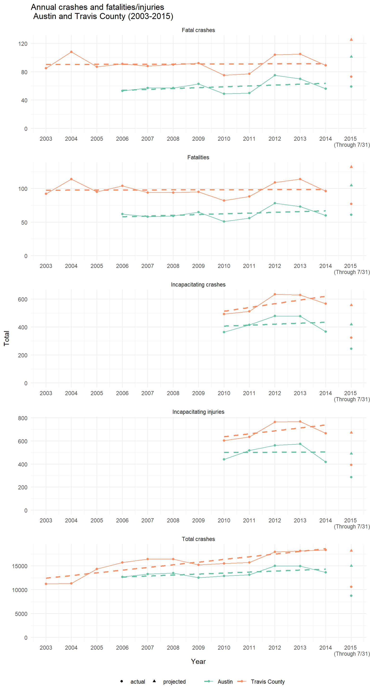
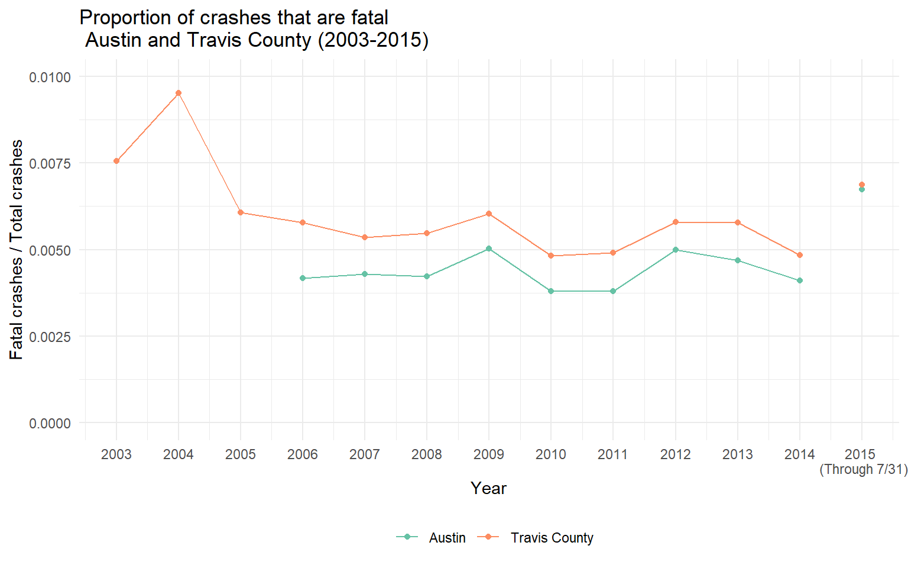

{kind=link}

I have been hearing quite a bit lately about how there have been an unusually large number of fatal automobile crashes in Austin this year, resulting in a total of 69 fatalities (as of August 19th). Terrence Henry (of KUT) recently did a story on this problem, and the City of Austin has convened the Vision Zero Task Force to figure out what policies to implement in order to prevent these deaths. KUT published an interactive map showing the locations of the fatal crashes and the Vision Zero Task Force put together a heat map showing the locations of crashes over the past five years.
I was curious to understand more about how fatalities have changed over time, but the only data I could find on the time trends was this graphic on the Vision Zero website. After a bit of digging, I found that I could get annual data for Austin (2006-2014) and for Travis County (2003-2014) from the Texas Motor Vehicle Crash Statistics reports provided by TXDOT (though the data are trapped in pdfs). It’s also possible to get disaggregated data for the time period of 2010 through the present from the TXDOT CRIS database Public File Extract, which gets updated with new information as it comes in, and so will presumably be more current than the annual reports.
The chart below plots the annual number of fatal crashes, fatalities, crashes in which incapacitating injuries occurred, incapacitating injuries, and total crashes, for both Austin and Travis County as a whole. For the current year data, I plotted both the actual numbers (through July 31, 2015) and very simple projections. (Details on how I put the figures together are at the end of this post.)
The first thing you can see from these graphs is that the projected number of fatal crashes and total number of fatalities is substantially higher than in previous years. In contrast, the projected number of incapacitating crashes, number of incapacitating injuries, and total number of crashes all appear to be (very roughly) consistent with the linear trends from previous years. Taken together, these trends suggest that the proportion of crashes that are fatal is higher than would be expected. Here’s a graph of the fatality rate over time:

2015 is clearly an outlier, though not as high as the proportion of fatal crashes in Travis County during 2003 and 2004 (unfortunately the data for Austin don’t go back that far). These years have higher proportions because there were fewer crashes overall in these initial years. Also note that Travis County as a whole has a higher fatality rate than the city of Austin, probably because the non-Austin roads in Travis county are larger and have higher speed limits.
I think this second graph provides good justification for one of the principles of the Vision Zero task force, which is to focus on infrastructure improvements to improve the safety of the transformation system for all of the people who interact with it, including pedestrians—in short, to make our streets and roads safe for humans. The graphs suggests that there’s more to the increase in fatal crashes than just population growth, more than just increases in vehicle miles travelled.
There’s a big limitation to using annual data for this sort of simple, “eyeballing” sort of analysis. If there are seasonal patterns in automobile crashes overall (such as more crashes during the colder months) or, more specifically, in fatal crashes, then my simple back-of-the-envelope projections could be somewhat misleading. To develop more nuanced projections, I would need to get finer-grained data on when crashes occur. unfortunately, for some reasons the public version of the underlying data does not include dates of individual crashes. (This is rather perplexing, considering that the interface will let you query a date range, even down to a single day.) More to come if I can figure out how to get access to data with dates on it.
Methods
Here’s how I constructed these figures:
- The data for 2003 through 2009 are drawn from the Crash Statistics reports, and the data for 2010 through 2015 are drawn from the CRIS Public File Extract.
- There are some discrepancies between the annual reports and the CRIS database for the latter period, so I am assuming that the latter is more accurate. Curiously, the number’s don’t quite match the Vision Zero graphic either.
- The incapacitating crashes and injuries numbers are only available starting in 2010, as prior to that time a different set of classifications was used that does not appear to be directly comparable.
- The dashed lines in each graph represent estimated linear trends, fit by ordinary least squares.
- The actual figures are plotted with circles. The projections for 2015 are plotted with triangles.
- For 2015, the projections were calculated by multiplying the actual number by 12 / 7 = 1.71 because the actuals are based on 7 out of 12 months. (Using 211 out of 365 days leads to a very similar multiplier of 1.73.)
- The underlying data (drawing from both the annual reports and the CRIS database) are available here.
- The code to re-create the figures is available in this Gist.
Reuse
Citation
BibTeX citation:
@online{pustejovsky2015,
author = {Pustejovsky, James E.},
title = {Fatal Crashes in {Austin/Travis} {County}},
date = {2015-08-20},
url = {https://jepusto.com/posts/Crashes-in-Austin-and-Travis-Co},
langid = {en}
}
For attribution, please cite this work as:
Pustejovsky, James E. 2015. “Fatal Crashes in Austin/Travis
County.” August 20, 2015. https://jepusto.com/posts/Crashes-in-Austin-and-Travis-Co.